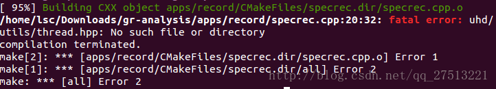

gr-analysis 安装问题解决
一、介绍
先前因为需要调试GNURadio 程序缘故，需要实时处理大量数据，每次都会出现突发溢出，所以尝试安装gr-analysis 工具进行离线接收处理。安装过程简单，但中途有小问题耗了一天，特此记录。
http://www.trondeau.com/grcon15-presentations#wednesday_Lincoln_Synchronized
Features
Tools for High Sample Rate Recording and Post-Processing in GNURadio
- metadata_to_csv: Convert metadata to comma-separated value (.csv) format for import into MATLAB, Octave, etc.
- specrec: High sample-rate recording (~30 MSPS) program with metadata. Scheduled, time-syncronized records with GPSDO. Linux-only as of now.
- gr_fileman: File manipulation program. Can convert between data formats, cut out a subsection of data, interpolates timestamps, etc. Somewhat like SoX but exploits metadata and timestamps
- gr_mkheader: Generate headers for data which previously had none
- gr_fstat: Compute statistics of .sc16 and .fc32 files (mean,var,max,min)
- read_file_metadata: Display metadata headers in human-readable format
具体可参考githubhttps://github.com/garverp/gr-analysis#gr-analysis
二、安装
These tools are primarily Linux-based. All tools but specrec should theoretically work, but untested on OSX/Windows.
1 | git clone https://github.com/garverp/gr-analysis |
三、问题
1. C++14 报错
我的ubuntu环境是14.04，在安装到第5步时会出现Error，大体内容是不支持C++14环境。搜索之后得知需要gcc 6.0及以上版本，安装过程涉及到ubuntu上gcc的版本切换，很折腾，在这推荐一个博客，一步到位解决！
http://www.cnblogs.com/BlackStorm/p/5183490.html
关键操作：
1 | sudo apt-get install gcc-5 g++-5 //安装gcc-5版本，实测足够 |
升级之后错误解决，进入第6步
2. UHD缺少头文件
编译第6步会提示UHD缺少头文件，因此我又重新安装了一番，折腾好久还是不行。问题如下：

碰巧看了github上的issue提交，修改之后成功，很关键的错误。我把提交的issue复制过来了。
1 | With UHD 3.10.2 PyBOMBS compilation fails due to a wrong uhd included header. |
按照路径打开 gr-analysis/app/record/specrec.cpp，修改第20行代码为
1 |
即可。
结果之后编译就能成功了！
http://qiaoxu123.github.io/posts/System-development/20180206-gr-analysis-installation-error-fix.html
All articles in this blog are licensed under CC BY-NC-SA 4.0 unless stating additionally.